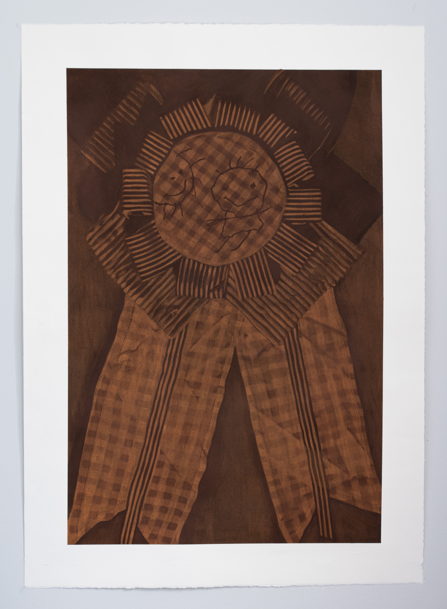
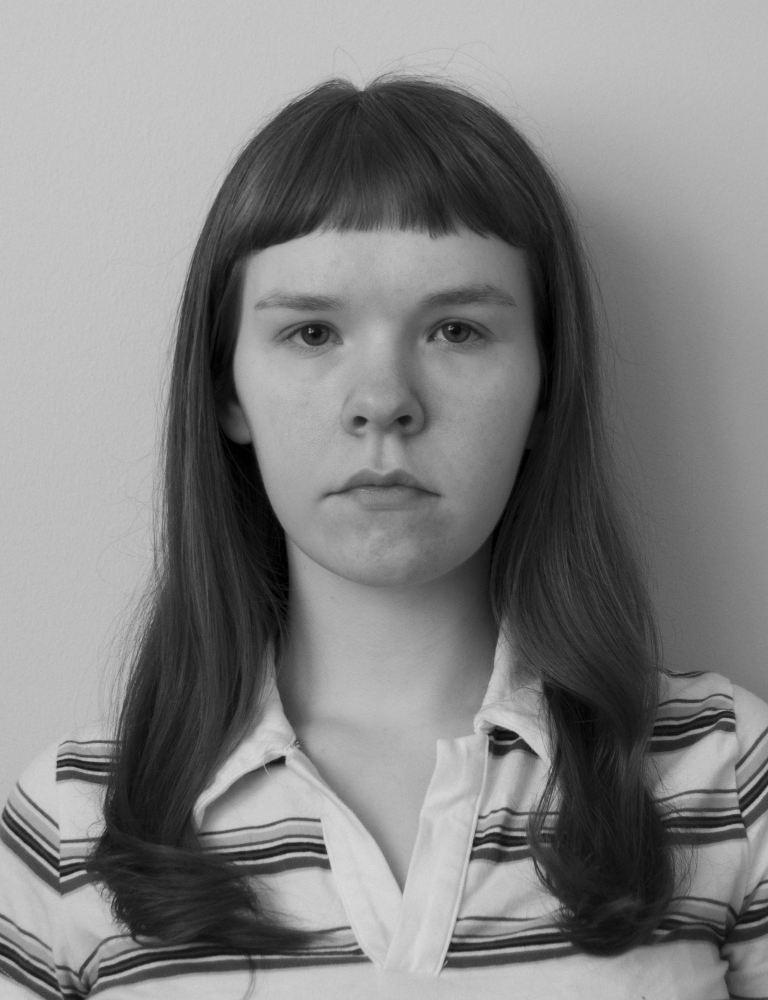

2026

title;Winner
30x40
medium;Conté and Gouache
on ARCHES
on ARCHES

h. MacLean
b. 1999 Cape Breton, NS
working in; Halifax, NS
(she/her)
IG; @h.maclea.n
hollieleannmac@gmail.com
artsist; drawing
b. 1999 Cape Breton, NS
working in; Halifax, NS
(she/her)
IG; @h.maclea.n
hollieleannmac@gmail.com
artsist; drawing
H. MacLean is a visual artist from Cape Breton, Nova Scotia, currently based in Halifax. Working primarily in graphite, Conté, and gouache, MacLean makes representational drawings concerned with control, resistance, draftsmanship, and the limits of visual clarity.
MacLean approaches drawing with the belief that “there is very little satisfaction in commanding something already obedient.” Recent reductive drawings use loose Conté that is lifted, erased, redistributed, and sharpened toward clarity. Where some might see realism and precision as restrictive or sterile, MacLean finds something exhilarating in the pursuit of control, particularly when the material resists it.
h. MacLean
b. 1999, Cape Breton, NS
Halifax, NS – IG: @h.maclea.n – hollieleannmac@gmail.com
b. 1999, Cape Breton, NS
Halifax, NS – IG: @h.maclea.n – hollieleannmac@gmail.com
Education
2022–2026Bachelor of Fine Arts, NSCAD University
Halifax, Nova Scotia
Halifax, Nova Scotia
2021–2022Applied Media and Communication Arts, NSCC
Sydney, Nova Scotia
Sydney, Nova Scotia
Group Exhibitions
2022TRACKS, Eltuek Arts Centre
Sydney, Nova Scotia
Sydney, Nova Scotia
Awards
2022Brian Geary Memorial Award, NSCC
Selected Projects
2024Participating Artist, Queer Citrus Collective
Utah, United States
Utah, United States
2022Ukraine Relief Fundraising Art Donation
Eltuek Arts Centre, Sydney, Nova Scotia
Eltuek Arts Centre, Sydney, Nova Scotia